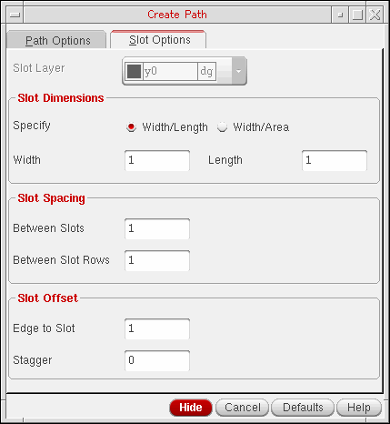
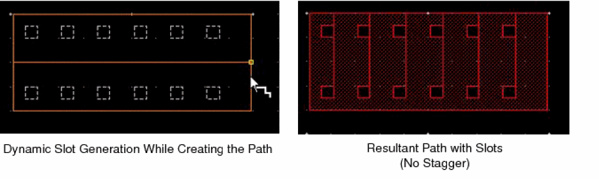
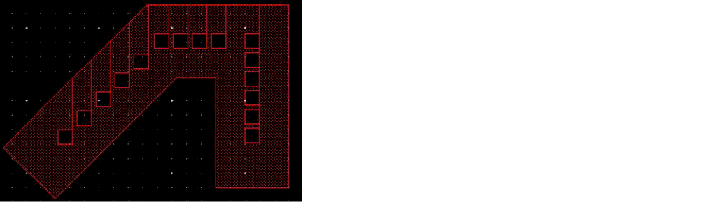

Creating a Path with Slots
- In the layout window, from the Layers panel, select the layer on which you want to create a path.
- Choose Create – Shape – Path.
-
Press
F3to open the Create Path form. - On the Path Options tab, specify the settings such as the path width, justification, end type, and net name, that you want to use to create the path.
-
Select the Create as ROD Object check box.
In the Name field that now becomes editable, change the default path name, if required. -
Select the Enable Metal Slotting check box to create a path with slots.
This makes the Slot Options tab available. -
Open the Slot Options tab.
 -
Select a layer-purpose pair from the Slot Layer list.
This list is available only if the Create as ROD Object check box is selected on the Path Options tab. -
Select Width/Length or Width/Area in the Slot Dimensions section.
If you select Width/Length, the text fields available are Width and Length. If you select Width/Area, the Length field is replaced with the Area field. - Specify the slot dimensions in the Width and Length or Width and Area fields.
- In the Between Slots, Between Slot Rows, Edge to Slot, and Stagger fields, specify values as required.
-
Click on the canvas to specify the path endpoints. Segments are created when you change the direction of the path.
Alternatively, you can specify the points of the path using the Enter Points form. -
Double-click on the canvas or press
Enterto finish creating the path.
While creating a path with slots, ensure that you create a path wide enough to contain the slots with the specified dimensions; otherwise, slots are not created. Slots are added dynamically as you create the path.

You can also create slots on diagonal paths, as shown in the following figure. Slots are not created on anyAngle paths.

Slots are not supported in geometric wires created from paths. For information about how to create wire interconnects, see
Related Topics
Controlling the Display of Paths
Return to top